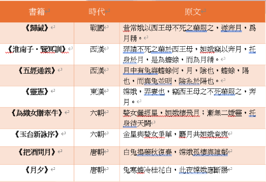

后羿嫦娥n種形象
射九日的羿與後羿並非同一人，後羿該是什麼樣?
有學者認為傳說中有三個羿。一為帝喾時的射師，見於《說文》二為唐堯時人，當時十個太陽同時出現，羿射落了九個，見《淮南子·本經訓》三為夏代有窮國的君主，見《左傳·襄公四年》。羿與後羿的區別是：羿是神話人物，射九日、殺怪獸，與嫦娥結成夫妻; 後羿是歷史人物，活躍於夏朝初期，任有窮氏首領。夏王仲康去世，其子相繼位，后羿驅逐了相佔據王位，因沉迷遊獵不理政事，被寒浞殺死。也有學者認為，羿與後羿是同一個人，因為后羿的“后”是職位，指君主或長官。后羿，相當於“當王的羿”。就算羿與後羿是同一人，也是兩套敘事體系。作為王的后羿是昏君，作為神的羿是英雄。說明歷史人物改寫神話人物時出現了錯亂。
